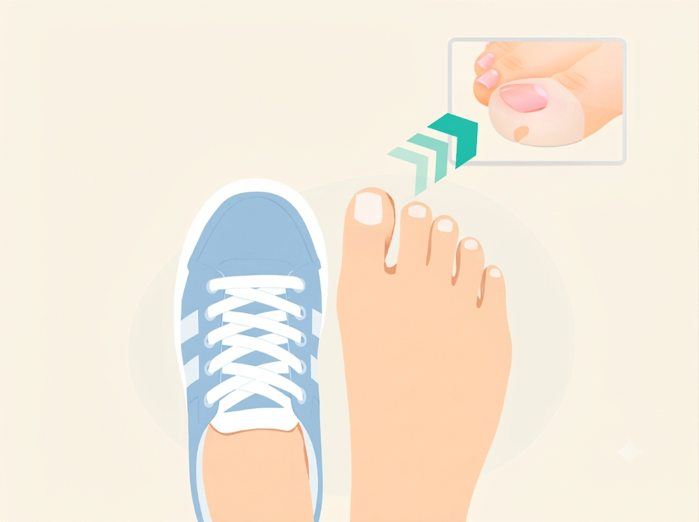
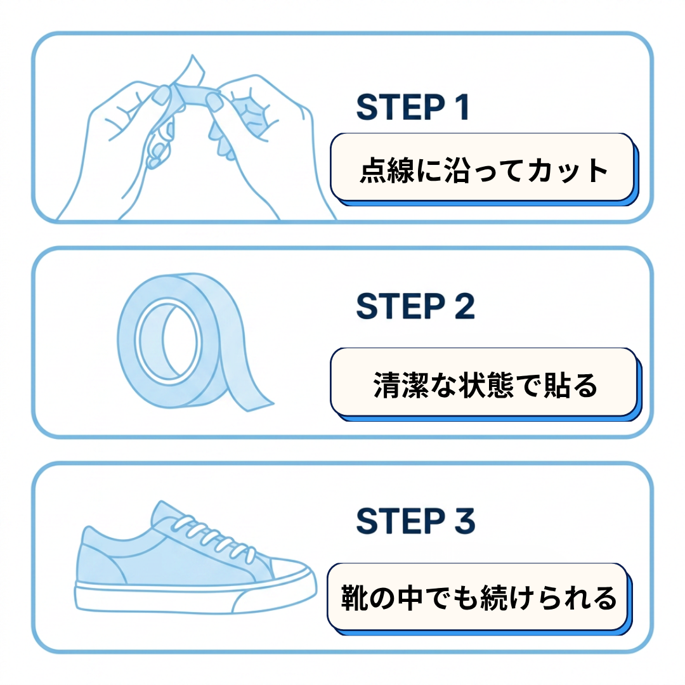
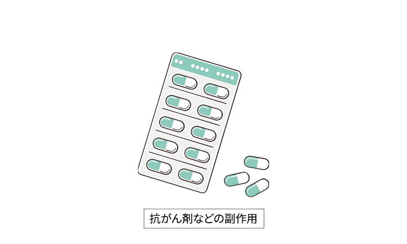
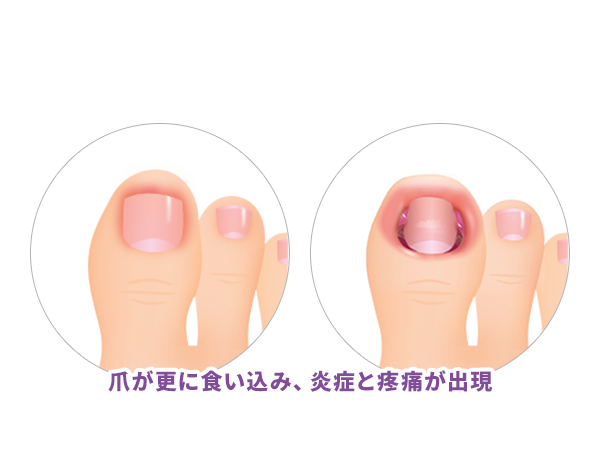
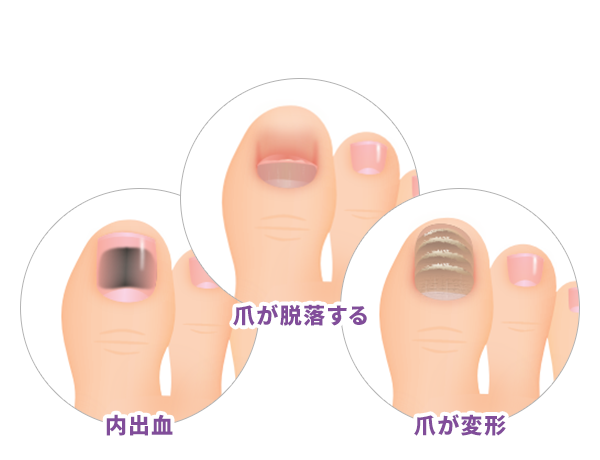
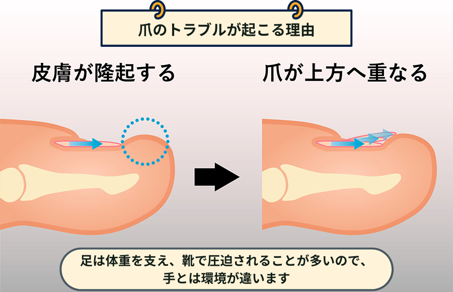
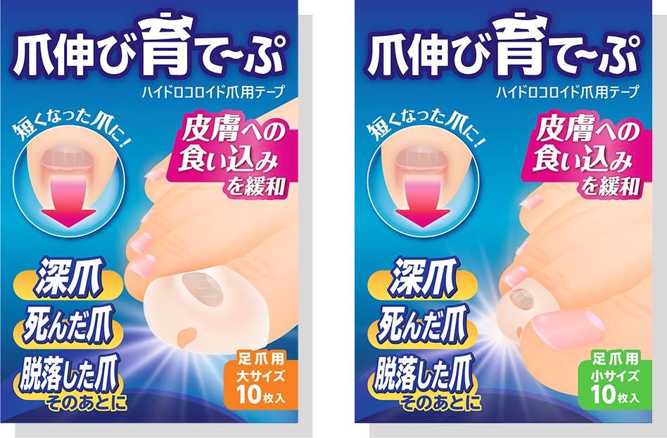
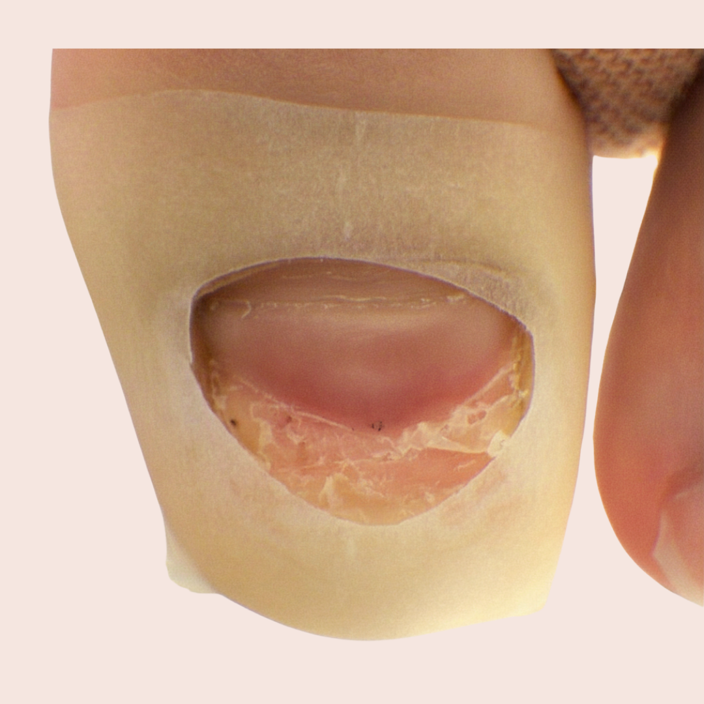
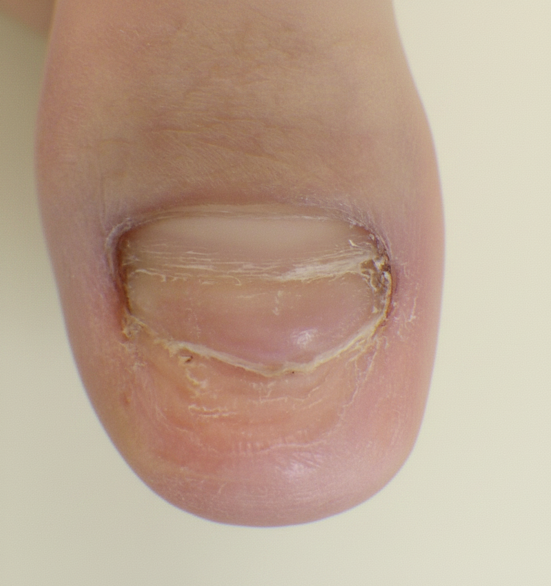
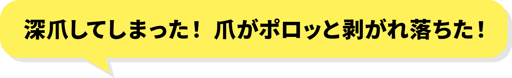

剥がれた爪、深爪、伸びにくくなった爪。
通院せず、靴の中でも続けられる
新しい"爪育て"習慣がはじまります。

※在庫に限りがあります
使い方はシンプル。3STEPで始められます

※使用感には個人差があります。痛み・強い炎症がある場合は医療機関へご相談ください。

ひとつでも当てはまったら、
読み進めてみてください。

爪は、指先の環境から大きな影響を受けています。 靴の中で繰り返される圧迫、乾燥、外部からの刺激——。 こうした条件が重なると、爪は本来の「伸びやすい状態」を保ちにくくなります。

このように、爪はさまざまなトラブルを起こすことがありますが、 その多くは日常的な負荷や環境が関係しています。

爪は本来、まっすぐ前に伸びていきますが、 指先に圧力がかかり続けることで進行方向が変わり、 上方向に重なるように伸びてしまうことがあります。
この状態を放置すると、 爪が正常に伸びにくい状態が続き、 変形や違和感につながる原因にもなります。
この状態に心当たりがある方は、 今のケア方法を見直す必要があるかもしれません。
『爪伸び育て〜ぷ』は、爪周囲をやさしく覆い、
日常生活の中で爪が伸びていく環境を整えるための
一般医療機器のセルフケアテープです。

※本品は爪の再生・治療を目的とした製品ではなく、
爪のセルフケアをサポートするためのものです。
面倒な手順は不要。爪をテープの穴から出して貼るだけで、毎日のケアが完了します。
薄手で柔軟性のある素材を採用。仕事中も、外出時も、生活を止めずに続けられます。
クリニックに行く時間が取れない方でも、ご自宅で気軽に続けられる設計です。
家庭で安心して使えるよう設計された、一般医療機器のセルフケアアイテムです。
目立ちにくい色合い・サイズで、女性はもちろん、男性の足元ケアにも自然に馴染みます。
そのまま1日過ごせる
目立ちにくく自然
素足でも違和感少なく
貼って1日スタート


本イメージは使用例の一例です
※個人差があり、効果を保証するものではありません。
『爪伸び育て〜ぷ』は、家庭での使用を想定した
一般医療機器として届出を行った製品です。
日常のセルフケアに、安心してお使いいただけます。
続ける人ほど、お得に。
まずは試してみたい方に
じっくり続けたい方に
400円OFF
習慣化したい方におすすめ
990円OFF

※決済はお申込みフォームで行います